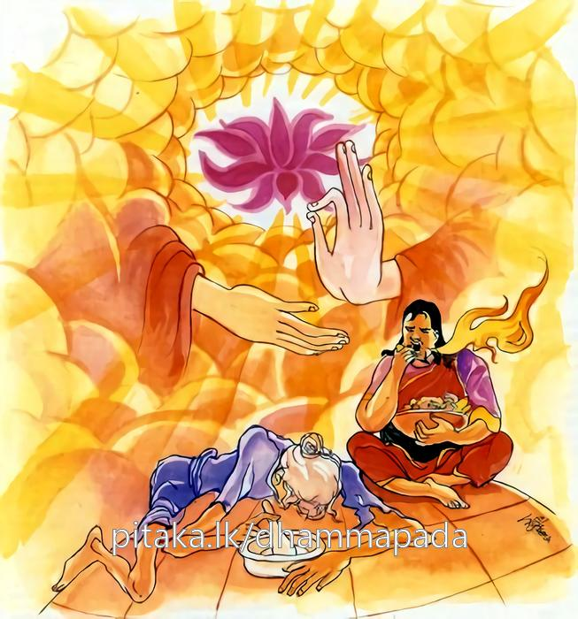

15-5 එක්තරා උපාසකයෙකුගේ කථා පුවත
මෙම කතාව සද්ධර්ම සාගරයෙන් ද කියවන්න.
ජිඝච්ඡාපරමා රොගා සඞ්ඛාරපරමා දුඛා
එතං ඤත්වා යථාභූතං නිබ්බාණපරමං සුඛං.
රෝගයෝ සාදුක පරම කොට ඇත්තාහ. දුඃඛයෝ තාක් සංස්කාරයන් (පංචස්කන්ධයන්) පරම කොට ඇත්තාහ. මේ දෙකරුණ තත් වූ පරිදි දැන (නුවණැත්තෝ නිවන් පසක් කරති.) නිවණ උතුම් වූ සුවය යි.

"ජිගච්ඡා" - යන මේ ධර්මදේශනය ශාස්තෲන් වහන්සේ අලවි නුවර වැඩසිටියදී එක් උපාසක කෙනෙකුන් නිමිති කරගෙන දේශනා කළහ.
එක් දිනක් බුදුහු දෙව්රම ගඳකිළියේ වැඩසිටියදී අළුයම ලොව බලන්නේ අලවි නුවර වැසි එක්තරා දුගී මිනිසෙකු දැක ඔහුගේ හේතු සම්පත් දැක පන්සියයක් භික්ෂූන් පිරිවරාගෙන අලවිනුවරට වැඩම කළහ. අලවි පුර වැසියෝ බුදුන්ට ආරාධනා කළහ. ඒ දුගී මිනිසා ද බුදුන් වැඩිය අසා බුදුවෙත එළඹ ධර්මය අසනෙමියි සිතක් ඇති කර ගත්තේය. එදිනම ඔහුගේ එක් ගවයෙක් පළා ගියේය. එනිසා ඔහු ගවයා සොයා යන්නේද ධර්මය අසන්නේදැයි සිතා ගවයා සොයාගෙන පසුව ධර්ම දේශනය අසමියි සිතා අළුයම ගෙයින් නික්මුනේය. නගර වැසියෝ බුදුන්ට ආරාධනා කර වඩා හිඳුවා බුද්ධ ප්රමුඛ මහා සංඝයාට දන් පිරිනමා අනුමෝදනය සඳහා පාත්රය ගත්තාහුය. බුදුරජාණන් වහන්සේ යමෙක් උදෙසා තිස්යොදුන් මග ගෙවා පැමිණියේද ඔහු ගොනෙක් සොයමින් වනයට ගිය නිසා ඔහු පැමිණිවිට ධර්මය දේශනා කරන්නෙමියි නිහඬ වුහ. එම පුරුෂයා ද දවල්වී ගොනා දැක ගවගාලට ගෙනගොස් දමා ඉදින් අනෙකක් නැත බුදුන් දැක වැදීම් පමණක් හෝ කරමියි. බඩගින්නෙන් පෙළුනද ගෙදර යාමට නොසිතා පැමිණ බුදුන් වැඳ එකත් පසෙක සිටියේය. බුදුහු ඔහු වාඩිවී සිටියදී උපස්ථායකයින්ගෙන් භික්ෂු සංඝයා වළදා ඉතිරිවු දෙයක් තිබේදැයි විමසා ස්වාමීනි සියල්ල ඇත යැයි පැවසුවිට එසේ නම් මේ තැනැත්තාට කෑම දෙන්නැයි පැවසුහ. ඔහු බුදුන් පැවසු තැනම ඔහු වාඩි කරවා කැඳ බත් ආදී කෑයුතු පානය කළ යුතු ආදියෙන් හොඳින් සැලකූහ. ඔහු බත් අනුභව කොට කට සේදුවේය. මෙතැන හැර ත්රිපිටකයේ කවර තැනකවත් බුදුරජාණන් වහන්සේගේ ආහාර පිළිබඳ විමසීමක් දක්නට නොලැබේ. ඔහුගේ කරදර නිසා විසිරී ගිය සිත එකඟවිය. අනතුරුව බුදුහු අනුපිළිවෙල කථාව කර සිව්සස් දේශනය කළහ. ඒ තැනැත්තා දේශනය අවසානයේ සෝවාන් ඵලයේ පිහිටියේය. බුදුන්ද අනුමෝදනා කර නැගීසිට වැඩම කළහ. මහජනයා බුදුන් පසුපස ගමන්කර නැවතුනහ. භික්ෂූන් වහන්සේලා බුදුන් හා ගමන් කරමින්ම උඩින් කථාකරමින් බලන්න ඇවැත්නි බුදුරජාණන් වහන්සේගේ ක්රියාව අනෙක් දිනවල මෙබඳු දෙයක් නොකරති. අද එක් මිනිසෙක් දුටුවිටම කැඳබත් ආදිය ගැන විමසා දෙවීය. බුදුහු නැවතී සිටගෙන මහණෙනි කුමක් කියවුදැයි විමසා එම කරුණ දැනගෙන එසේය මහණෙනි. මම තිස් යොදුන් මගගෙවා කතර පසුකර පැමිණියේ ඒ උපසකගේ හේතුසම්පත් දැනගෙනය. ඔහු අළුයම සිට අතිශයෙන් කුසගිනි වී ගොනෙකු සොයමින් කැලෑවේ හැසිරුනේ ය. කුසගින්නෙන් වෙලී සිටිය දී ධර්මදේශනා අවබෝධ කර ගැනීමට නොහැකි යයි සිතා මෙලෙස කළෙමි. කුසගින්න තරම් තවත් රෝගයක් නැතැයි පවසා මෙම ගාථාව දේශනා කළහ.
හැම රෝ අතර බලවත් ලොව බඩගින්නයි.
අන් හැම දුකට වැඩියෙන් එයදුක දන්නයි
බඩගිනි කෙනා බුදුබණ දහමත් පන්නයි
බඩගිනි නිවුම මුල් වශයෙන් කළයුත්තයි.
ජිගච්ඡා පරමා රොගා බඩගින්න බලවත් රෝගයයි පඤ්චස්කන්ධය බලවත් දුකයි. මෙ ඇති සැටියෙන් දැන නිවන පරම උතුම්ම සැපයයි දැනගන්න. එහි ජීගචඡා පරමා රොගා - බලවත් රෝගය නම් අනෙක් රෝගාබාධ වරක් හෝ සුව කළ හැකිය. දෙවන වශයෙන් යටපත් වේ. බඩගින්න නම් නිතරම පිළියම් ප්රතිකාර කළ යුතුමය. රෝගයන් අතර මෙය පරම රෝගයයි සඞ්ඛාරා - යනු පඤචස්ඛන්ධයයි එතං ඤත්වා මෙය දැන බඩගින්න තරම් රෝගයක් නැත. ස්ඛන්ධ පරිහරණය සමාන දුකක් නැත මේ කරුණ ඇති සැටියෙන් දැන නුවණැත්තා නිවන අවබෝධ කරයි. නිබ්බාණං පරමං සුඛං නිවන පරම සුවයයි එය සියලු සුව අතර උසස්ම සුවය යන අර්ථයි දෙසුම අවසානයේ බොහෝ දෙන සෝවාන් ආදී මාර්ග ඵලයන්ට පැමිණියහ.